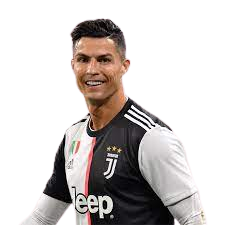
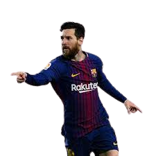
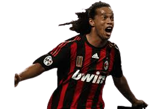
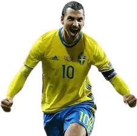
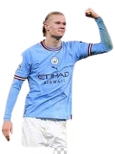
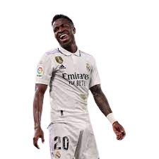
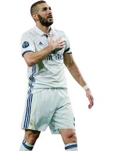
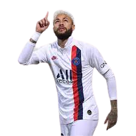
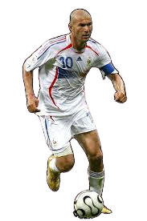
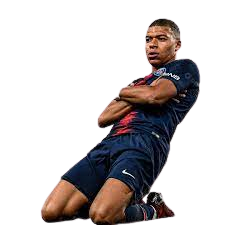

-
Cristiano Ronaldo
- Portugal
- Atacante
Cristiano Ronaldo dos Santos Aveiro é um futebolista português que atua como ponta-esquerda ou centroavante. Atualmente joga pelo Al-Nassr, da Arábia Saudita, e também pela Seleção Portuguesa, onde é capitão.
-
Messi
- Argentina
- Atacante
Lionel Andrés Messi Cuccittini é um futebolista argentino que atua como atacante. Atualmente joga pelo Inter Miami e pela Seleção Argentina, onde, atuando como capitão, venceu a Copa do Mundo do Catar de 2022.
-
Ronaldinho
- Brasil
- Meio-campista
Ronaldo de Assis Moreira é um ex-futebolista brasileiro que atuava como meio-campista ou ponta-esquerda. Atualmente é embaixador do Barcelona, clube em que fez história.
-
Zlatan Ibrahimović
- Suécia
- Centroavante
Zlatan Ibrahimović é um ex-futebolista sueco de ascendência bósnia e croata que atuava como centroavante. É amplamente considerado o maior jogador sueco da história do futebol.
-
Erling Haaland
- Noruega
- Centroavante
É considerado um dos melhores atacantes do futebol mundial. Em 2020, ganhou o prêmio Golden Boy, dado ao melhor jogador com idade abaixo de 21 anos atuando na Europa
-
Vinícius Júnior
- Brasil
- Ponta-esquerda
é um futebolista brasileiro que atua como ponta-esquerda. Atualmente joga pelo Real Madrid e pela Seleção Brasileira. Em junho de 2017, Vinícius apareceu na 39ª posição de uma lista do jornal inglês.
-
Karim Benzema
- França
- Centroavante
Karim Mostafa Benzema é um futebolista francês que atua como centroavante. Atualmente joga no Al-Ittihad, da Arábia Saudita. Descrito como um atacante criativo e prolífico;
-
Neymar Junior
- Brasil
- Atacante
Atualmente joga pelo Paris Saint-Germain e pela Seleção Brasileira. É considerado o principal futebolista brasileiro da atualidade e um dos melhores futebolistas do mundo;
-
Zinédine Zidane
- França
- Atacante
Zinédine Yazid Zidane é um treinador e ex-futebolista francês de origem argelina. Atualmente está sem clube. Como jogador, foi um meio-campista clássico e é considerado um dos maiores de todos os tempos.
-
Kylian Mbappé
- França
- Atacante
Mbappé Lottin é um futebolista francês que atua como atacante. Atualmente joga pelo Paris Saint-Germain e pela Seleção Francesa. Considerado um dos melhores jogadores da última década;
-
Kylian Mbappé
- França
- Atacante
Mbappé Lottin é um futebolista francês que atua como atacante. Atualmente joga pelo Paris Saint-Germain e pela Seleção Francesa. Considerado um dos melhores jogadores da última década;